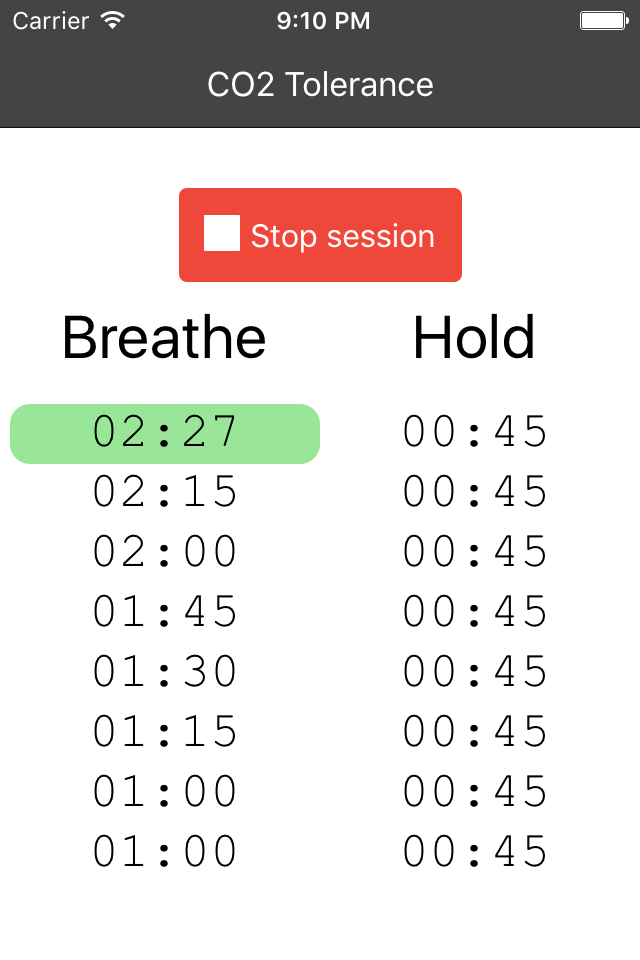
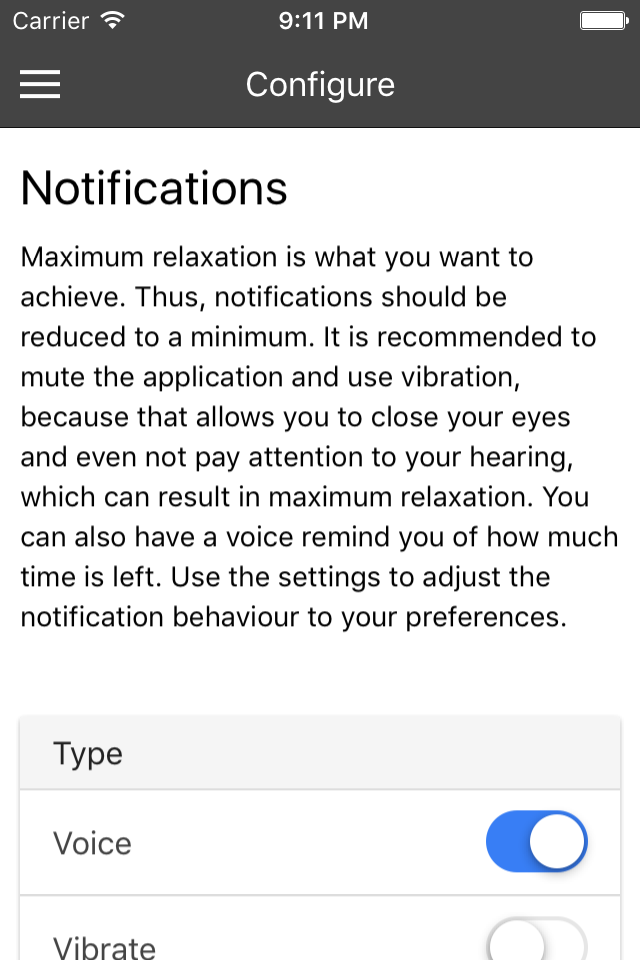

Freedive
A simple but effective breathhold training application for freedivers.- Use auto-generated tables for CO2 Tolerance and O2 Deprivation
- Create your own custom tables by choosing table size freely and setting all durations individually
- Test your breath hold duration and have a history of your attempts
- Uses advanced notifcations with vibration or speech during tables


FAQ
How often should I use this app?This cannot be answered in general. As a guideline, many people have had considerable success doing daily exercises. But even weekly exercises will improve your ability to hold your breath.
Should I breathe normally between the hold intervals?Let’s get a few basics straight here. In general, when you breathe in, your heart rate falls increases a little bit. And when you breathe out, your heart rate decreases a little bit. When we therefore breathe out much longer than we breathe in, our heart rate will climb down in time. And we want our heart rate to climb down, because a lower heart rate means lower oxigen consumption and thus longer hold duration. Thus, during the “breathe” intervals it is good to breathe in slowly and then breathe out even longer. As a rule of thumb, you should breathe out at least twice as long as you breath in. For example, breathe in 8 seconds, breathe out 20 seconds. When taking the last breath leading to the hold make sure to completely empty your lungs, so you fill your lungs completely with “fresh” air.
Hyperventilation helps me hold my breath longer. Should I use it?Well of course it does! But you shouldn’t use it, because if you do then you risk passing out. And passing out is - if you are in the water - a very very dangerous thing to do. The problem here is that you might run out of oxygen while still not feeling the urge to breathe and thus still happily diving around (the urge to breathe is triggered by high levels of CO2 in your blood and not, as many people think, by low levels of O2).
How can I support this app?Spread the world
Download my pro version
Donate via Paypal: paypal.me/lucanaterop
Donate via Bitcoin: 16BQsRMmvfb1fFZNYvnAseR9Yc4DgzZ6rQ